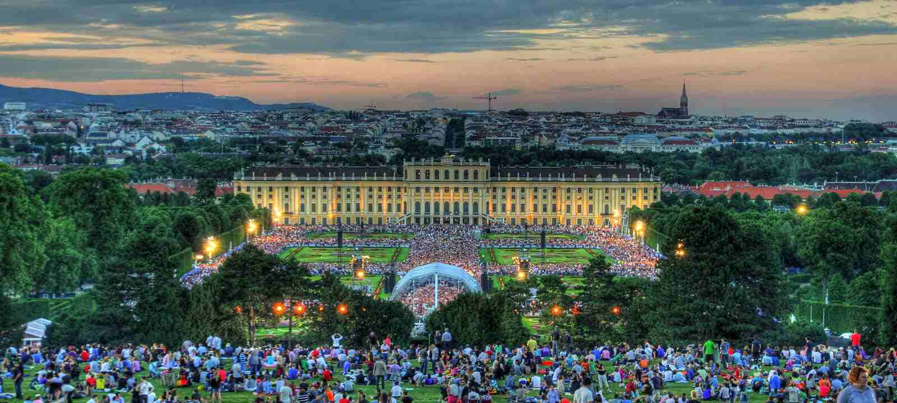
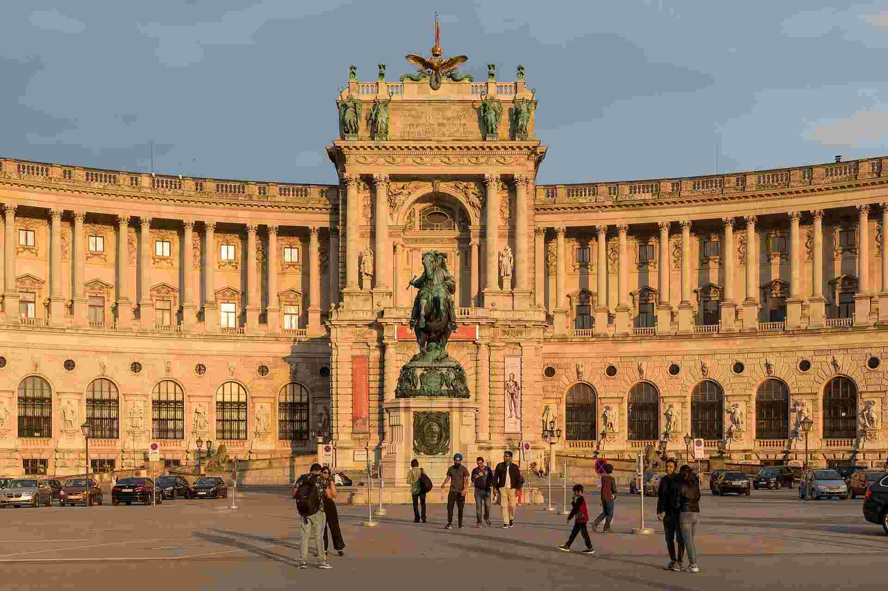
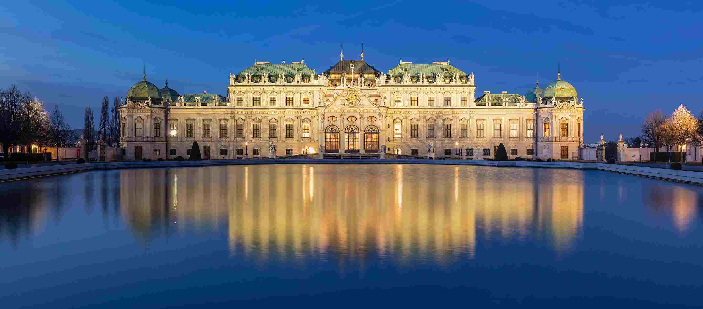
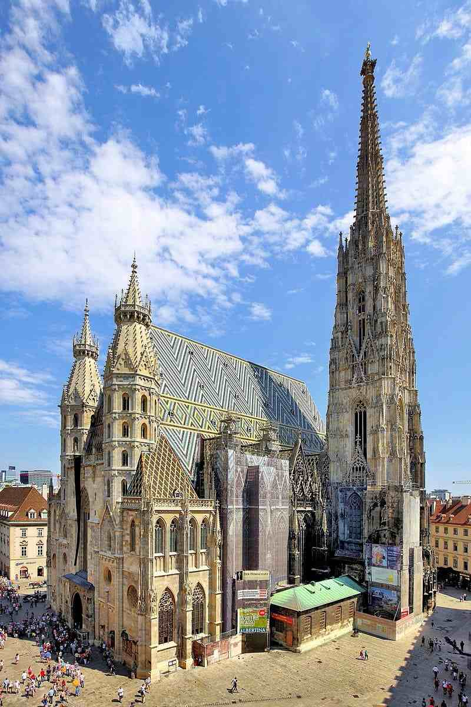

Why Vienna is Awesome
If you didn't know, Vienna is the capital of Austria and it’s super famous for its culture. It’s got some amazing palaces and history, plus a ton of music history like Mozart. You’ve got to check it out if you’re into old buildings and classical music!
Top Places You Have to See
-
Schönbrunn Palace
This palace is really old and it’s got huge gardens. It was used by emperors back in the day.
-
The Hofburg
The Hofburg was where all the rulers used to live. Now it’s like a museum and stuff. It is so neat!
-
Belvedere Palace
This place is all about art! Some really famous paintings are here, like my favorite "The Kiss" by Klimt.
-
St. Stephen’s Cathedral
This giant cathedral is like the most famous building in Vienna. The architecture is so amazing!